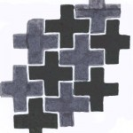

M.C.Escher: Kalbi ve ruhuyla bir grafiker, kontrastlara takintili
Maurits Cornelis Escher arka-on plan, arka plan figur ve alginin dogasina, kisacasi kontrastlarin her turlusune kafayi takmis bir grafiker. Bu yazida Escher’in hayatindan kisaca bahsedip, grafiker olarak gelisimine ve bunun grafiklerindeki ana temalara olan etkisine degineyim dedim.
Biyografi
Escher 17 Haziran 1898’de Hollandanin Leeuwarden sehrinde dunyaya gelir. Ilk ve orta okulda pek basarili degildir, ama neyse ki cizim yetenegi ortaokulda iken hocasi F. W. van der Haagen tarafindan farkedilir. Orta okuldan sonra Harlem’a Mimari ve Dekoratif Sanatlar okuluna mimarlik egitimi almak icin gider. Harlem’de hoca olan Holandali sanatci Jessurun de Mesquita Escher’in yetegini fark eder ve mimarligi birakmasini onerir. Escher onerisini kabul eder ve 1919’dan 1922’ye kadar Jessurun de Mesquita’in altinda grafik egitimi alir. 1922’de artik cizim ve agac isleme konusunda yeterince egitim aldigini dusundugunden okulu birakir ve Italya’da gezilerine baslar. 1922’den 1937’ye kadar Escher Guney Italya ve Ispanya’nin muhtesem manzararinda yuruyerek dolasir. Genellikle baharlari ve yazlari dolasiyor ve ilgisi ceken seylerin cizimlerini yapiyordu, kislari ise cizimlerinin icinden sectiklerinin baskilirini yapmakla ugrasiyordu.
1924’de Jetta Umiker ile Italya’da evlenir ve 1935 yilina kadar birlikte Roma’da yasarlar. 1935 yilinda Italya’daki politik atmosfer yuzunen Isvicre’de Chateau d’Oex’e tasinip iki yil orada kalirlar. 1936 yilinin Mayis ayindan Haziran ayina kadar olan donemde Itlaya ve Ispanya’daki son calisma gezisini yapar. Bu gezide Kordoba’daki El Hamra sarayi ve La Mezquite camisindeki Magriplilerin mozaiklerinin detayli kopyalarini yapar. 1937’de Bruksel yakinlarinda ki Ukkel adli kucuk bir kasabaya yerlesirler. 1941’de ise Hollandaya geri donup, 1970 yilina kadar yasadigi Baarn’a yerlesirler. 1970’de Laren’e tasinir ki burada da 27 Mart 1972’de olur.
Neden Grafik?
Ben her zaman “Neden sunda calismak varken bunda calismayi sectin?” sorusunu cok ilginc ve onemli bulurum. Ozellikle calisalan disiplinde birden cok secenek oldugunda. Mesela, Bach’a gidip resim dururken neden muzigi sectigin diye sormak abzurd olur, ama Glenn Gould’a misal cello yerine neden piano’yu sectin diye sormak cok ilginc olabilir. Escher gibi cizim konusunda asmis bir yetenege sahip biri icin de neden resim veya baska bir gorsel alan degil de grafik diye sormadan edemedim. Belki calistigi konularda resimler yapmis olsa idi cok daha unlu olabilirdi. Sorumun cevabini arkadaslarindan birine yazdigi bir mektupta buldum, ki bu mektupta acik sozlulukle ve etkileyici bir bicimde grafik sanatlarina olan tutkusunun sebeplerini soyle siraliyor:
1. Tekrar etmeye duyulan arzu
2. Zanaatin guzelligi
3. Teknigin dayattigi sinirlamalar
Escher cogunlukla agac oymaciligi, lithografi ve mezzotint tekniklerini kullandi. Agac oymaciliginda gercekten cok iyiydi. Baska teknikleri denediyse de, sonuclardan memnun kalmadi. Her halde yuzeylerle calismaktan hoslandigi soylersek yanilmis olmayiz.
Matematik ve Kontrastlar
Escher’in normal bir matematik egitimi yoktu, yine de cizimleri guclu matematiksel ogeler ve cagrisimlarla dolu. Aslinda, okuldayken matematikte berbatti. Bazi matematik derslerinden kalmis zamaninda. Onun matematik anlayisi biraz daha sezgisel ve hayal gucune dayali. Okuldayken geometride cok daha iyiydi. 1936 yilinda hayati boyunca surcek olan simetri ve duzen ile olan ilgisi basladi, ozellikle El Hamra sarayinda gordugu mozaiklerden sonra. Takip eden yillarda duzlemsel simetri gruplarini calisip bu matematiksel kavramdan esinlenilmis agac kesimleri yapti. 1941 yili civarinda renk tabanli bolmeyi inceledi ve kombinasyonlari sekil, renk ve simetri ozelliklerine gore kategorize etme sistemi gelistirdi ki bu sistem daha sonra matematikciler tarafindan kristallografi adiyla adlandirildi. 1956 yili civarinda sonsuzlugu duzlem uzerinde temsil etme uzerine calismaya basladi. Bu calismalar Escher’i hiberbolik mozaik dosemeye, yani hiperbolik duzlemin bir duzen ile dosenmesine, goturdu. Deformasyon sonrasi degismeyen ozlliklerin calismasi olan topoloji ile de ilgilendi bir sure.
Hic bir sey anlamdigimiz matematiksel nosyonlari bir yana birakip Escher’deki kontrast gibi daha elle tutulabilir kavramlara baksak hepimizin hayrina olur sanirim. Yine arkadaslarina yazdigi bir mektupta Escher “Duyular kontrastlari algilayabildigi surece ancak hayat mumkundur…Hicbir imajin, hicbir formun, her hangi bir rengin bir tonun bile kendi kendine “varolamayacagini”; goz ile gozlemlenebilen her seyde bizim ancak iliskileri ve kontraslari kastettigimizi fark etmek buyuleyici degil mi? Eger bir nicelik baska bir nicelik ile karsilastirilamazsa, hic bir nicelik varolmaz. ” diye yazar. Siyah ve beyaz arasindaki guclu kontrastlari ile grafik sanatlari, kontrastan bu derece buyulenmis birisi icin her halde en uygun yol. Fakat Escher’in kontrast duskunlugu bence sadece renk ve form ile sinirli degil. Onun icin normal perspektif ile bozulmus perspektif bir kontrast veriyor, veya duzenli simetrik bir obje ile cope atilmis kirik dokuk bir obje, veya gorecelilik kavrami kendi icinde kontrast yaratmak icin saysiz yol sunuyor, konkav konvex ile kontrast icinde, gun gece ile kontrast edilebilir veya iki boyut uc boyut ile kontrast edilebilir. Bu ve bunun gibi sayisiz yolla Escher grafiklerinde kontrastlar yaratti, ki bu calismalar garip duygular yaratmasinin otesinde oznenin kiyaslama ile saf algisina da neden oluyor.
Escher’in Grafiklerindeki Ana Temalar
Escher’in 1937’den onceki ve sonraki calismalarinda cok buyuk farklar var. Yukarida da bahsettigim gibi, 1937’ye kadar cok mobil, siklikla seyahat eden ve gordugunu cizen birisi. Bu devreye gercekligin gozlenmesi periyodu diyebiliriz. Bu periyodun cizimleri genellikle Guney Italya ve Ispanya’dan manzaralar ve mimari cizimler. Bu donemde yaptigi cizimler daha sonraki cizimlerine icerik saglayacakti.
1937’den sonra gercekligi gozlemlemiyordur daha fazla, hayal gucu ve zekasi devredir artik.Hayal gucunu harekete geciren ise Faslilarin eserleridir. En son calisma gezisinde El Hamra sarayinda gordugu Magriplilerin mozaik cizimleri ile buyulenir. Bir cogunu not defterlerine kopyalar ve dondugunde bu kopyalar uzerine calismaya baslar.
|  |
Bu mozaiklerde ki duzen ve simetri Escher’in ilk bakista etkileyen seydi. Ama Escher ayni zamanda bir figurun tanimlanabilir olmasiyla da kafayi bozmustu. Kendi deyisiyle:
“Faslilarin dininin onlara resim yapmayi yasaklamasi ne yazik! Bana oyle geliyor ki bazi zamanlarda elemanlarini yarattiklari soyut figurlerden cok daha kayda deger figurler gelistirmeye cok yaklasmislar. Bildigim kadariyla, hicbir Fasli sanatci baliklar, kertenkeleler veya insanlar gibi dogadan alinmis somut ve taninabilir figurleri yapi taslari olarak kullanmaya cesaret etmemis (veya bu fikirde mi akillarina gelmedi acaba?). Buna inanmak cok zor, taninabilir olmak benim icin o kadar onemli ki ben onsuz asla yapamam.”
Taninabilirlikle iligili takintisi, karsi koyamadigi Magriplilerin mozaiklerindeki duzen ve simetrinin cekiciligi ile birlesince soyut figurler yerine somut dogal figurlerle mozaik yapma fikri ortaya cikar. Bu fikirden ortaya cikan ilk calismalardan biri Simetri Calismasi 91 adli simetrik bir bocek ile yapilmis bir mozaik. Bu calisma ayni zamanda Escher’in duzlemin duzenli bolunmesi diye adlandirdigi en zengin temasinin da baslangici oldu.

Bir kere fikre sahip olunca, daha sonra onunla deneme yanilma calismalari ile gelistirmek kolaydi. Duzlemi doldurma alaninda zaten yeterince incelenmis cevirme, aynada yansitma, egimini degistirme gibi, El Hamradaki mozaiklerde de olan teknikler vardi. Escher de bu teknikleri denemeye basladi. Figurun egimini degistirdi:
Degisik figurler kullandi:
Figurlerin ayna yansimalari ile mozaikler yapti:
Dogal figurlerle mozaik yapmada biraz rahatladikca, daha yeni seyler denemeye basladi. Bunlardan en onemli adim ucuncu boyutun resimlere dahil olmasi oldu. Once uc boyutlu bir kurdele uzerine iki boyutlu mozaigini yapti:
Ama ucuncu boyut bir kere isin icine girince, figurlerin kendisini de ucuncu boyuta tasimadan olmazdi.
Escher’in bu kugu resmine kadar kattettigi yol muthisti. Bu resimde artik kurdele uzerinde yapilan oynamalar sonucunda, kurdele kaybolup yerine kugulardan olusan matematikte sonsuzlugun sembolu olan yana yatmis sekiz figuru ortaya cikarken resim kavramsal bir boyut daha kazaniyor. Kugularin ucusu da olusturduklari sekil gibi sonsuz bir dongu icinde. Ote yandan, ucuncu boyutta arka plandaki baska bir obje ile degil, direk mozaigi olusturan kugularin kendisi ile veriliyor. Mozaigi olusturan figurlerinin ucuncu boyuta cikisi kesfedilmeyi bekleyen bir cok yeni kapiyi daha acar. Escher butun ogrendiklerini uc boyutlu hayvanlardan olusan, hic bir figurun bir birini tekrar etmedigi bir mozaikle ozetler:
Escher icin bir baska onemli hamle de figurlerin bir birlerine donusmeleri. Liberation (Ozgurluk) adli eserinde en altta siyah ve beyaz ucgenlerle baslayip, onlari hafif distort edip yukari ciktikca yavas yavas siyah ve beyaz kus figurlerinden bir mozaik ortaya cikmaya baslar. Daha sonra bu kuslar kendilerini iki boyutlu duzlemden de kurtarip, uc boyutlu uzayda ozgurce ucan kus figurlerine donusur.
Ozgurluk adli calismasi Escher’i de oldukca ozgurlestirir. Bir kere her hangi bir figur veya seklin baska bir figur veya sekle donusebilecegini kavradiginda, Escher gibi sonsuzluk ve hic bitmeyen dongulere hayran bir grafiker icin bir sonraki adim bir figuri daha buyuk veya daha kucuk olcekle kendine donusturmek olur. Kertenkeleler iste bu fikrin urunudur:
Burada resmin merkezindeki heksagonlar disari dogru ilerledikce kertenkelelere donusur. Escher bu grafikle tam anlamiyla tatmin olmaz cunku duzlem rastgele bir noktada sinirlandirilmistir, sinirlar keyfi olarak artirilip azaltilabilir ve tam bir butunluk teskil etmiyor. Escher sorunu bu resim uzerinde biraz daha oynayip sonsuzlugu bir butunluk olarak temsil etmeyi mozaiklerin surekli bir birine donusmesiyle cozer:
Escher’in daha populer iki calismasi ile bitirelim. Bu calismalardan ilki “Gece ve Gunduz”
Bu cizimi yaratan fikir isik = gun ve karanlik = gece kontrasti. Zaten daha onceki calismalarinda da siyah ve beyazi bir birleri ile kontrast etmisti, yani fikir cok yabanci degildi. Ama bu temel fikir, uc boyutlu resimlerin kullanilmasi ve bir kasabanin gunduz goruntusunun ayni kasabanin gece goruntusu ile kontrast edilmesi ile bam baska bir noktaya cekiliyordu. Klasik bir Hollanda kasabasini kullandi, ki bu daha onceki seyahatlerinin repertuarindan geliyordu. Iki manzara resmi bir birinin ayna yansimasi, yani daha once mozaiklerde kullandigi ayna yansimasi teknigini kullaniyor yine. Ortada, tarlalar yukari dogru ciktikca siyah ve beyaz kuslara evriliyor ki bu da daha once “Ozgurluk” adli eserinde gordugumuz kuslarin bir birine donusumu. En yukarda baska bir donusum daha var. Soldan saga dogru gidildiginde gunduz gokyuzu beyaz kuslara donusur, sagdan sola gidildiginde ise gece gokyuzu siyah kuslara evrilir ki bu da daha once gordugumuz donusum tekniginin bir uygulamasi. Sonucta, resmin ortasina yerlestirilmis bir T sekli uzerinde es zamanli olarak toplam 3 donusum yaparak iki kasabaya bir birine baglar ve geceyle gunduzu kontrast eder.
Ikinci calisma “Kertenkeleler”:
Bu cizimde iki boyutlu duzlemdeki kertenkeleler uc boyutlu duzleme cikip bir tur atip tekrar iki boyuta donuyorlar. Cizim kitabi duzlem ve uzay arasinda, yani iki boyutlu dunya ile uc boyutlu dunya arasinda, bir gecis bolgesi gorevi goruyor. Bir mozaigin figurlerini uc boyutlu dunyaya tasima daha once gordugumuz bir tema. Ama bu sefer o donusumu cizim tekniklerindeki atraksiyonlarla yapmak yerine, kertenkele kavramindan faydalaniyor: Kertenkeleler tirmanabilir. Bir kertenkele bir kitaba tirmanirken uc boyutlu dunyaya da tirmanabilir. Bu resimde duzlemden uzaya donusum Escher’in diger calismalarina kiyasla resimsel olarak puruzsuz olmasa da, bu sefer donusum kavramsal olarak puruzsuz. Resme bakan kisi eger kertenkeleler hakkinda biraz bir sey biliyorsa resimsel bosluklari zihni ile cok rahat doldurabilir. Kertenkele bir kere duzlemden cikti mi, onun yasam dongusu de baslar. Yine klasik bir Escher temasi yani, dongusellik. Dodekaeder’in (Oniki yuzlu sekil) tepesinde hayatinin zirvesine ulasir. “Bir anlik duraksama, puflamak ve uflemek icin, yorgun ama huzurlu, ve sonra duzlemin seviyesine asigaya dogru olan yolculuguna devam eder, duzluk diyarina, ki burada bir simetri figuru fonksiyonuna kaldigi yerden devam eder.”
NazIm


{kind=link}
{kind=link}
{kind=link}
{kind=link}
{kind=link}
{kind=link}
{kind=link}
{kind=link}
{kind=link}
{kind=link}
{kind=link}
{kind=link}
{kind=link}
{kind=link}
{kind=link}
{kind=link}
{kind=link}
{kind=link}
bu eşer ne tip
sizmiş
harikalar çok göz kamaştırıcı bence böyle resaimler çok zor çizilir bence sen harika bir ressamcısın escher muhteşem resimler çok beğendim harikasın escher……
proje ödevim için çok yardımcı oldu çok teşekkür ederim . ama keşke imla ya biraz daha dikkat etseydiniz düzeltmek için çok uğraştım
yine de çok teşekkürler ayrıntılı bilgi vermişsiniz . elinize sağlık.
Kaynaklari da verir misinix lutfen odevime kaynakca olarak ne koyacagim
Selamlar Seda, odevine yardimci olabildiysek ne mutlu bize. Bu yazinin orjinali bir donem odevi olarak ingilizce yazilmisti, sonra biraz acelece turkceye cevrildi, imla hatalari ondan kaynaklaniyordur kusurumuza bakmayasin. Yazinin hazirlanmasinda su kaynaklardan faydalanildi:
Escher, M. C. The world of M.C. Escher. Abradale Press, New York 1988
Escher, M. C. Escher on Escher : exploring the infinite. Abradale Pr., New York 1989
Escher, Maurits Cornelis. The Graphic work of M.C.Escher. Meredith Pr., New York 1967.
Hofstadter, Dougles. Gödel, Escher, Bach: an Eternal Golden Braid. Basic Books, New York 1979
The Official M.C. Escher website: <http://www.mcescher.com/>
Wikipedia Entry “M.C. Escher” online: <http://en.wikipedia.org/wiki/M._C._Escher>
soğolun size nasıl teşekkür etsem bilmiyorum . gerçekten proje ödevim için çok yardımcı oldu . çok teşekkürler . emeğinize sağlık .
imla konusu da hiç önemli değil . bu kadarı bile yeterli emeği geçen herkese teşekkürler.
bir çok site gezdim . hiç biri bu kadar ayrıntı kullanmamıştı . teşekkürler 🙂 🙂